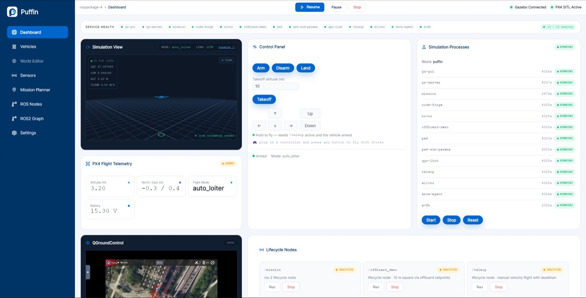
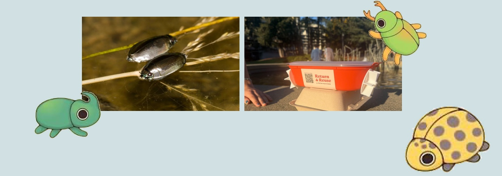

Puffin
Class Project (CS 160: User Interface Design)
A browser dashboard that makes drone simulation setup simple
Work

Class Project (CS 160: User Interface Design)
A browser dashboard that makes drone simulation setup simple
Personal Project · Full-stack web app · In progress
A community where people with skin conditions share what actually worked

Class Project · Industrial design
A robot inspired by how the whirligig beetle moves on water
Product, data and strategy work.
Software Engineering Internship · Shipped
Shipping a safe, multilingual AI companion for abuse survivors
Consulting (via FEED) · In progress
A tool that estimates packaging fees across 7 states, plus ways to cut them
Personal Project · In progress
Do Combine drills actually predict which receivers get open?